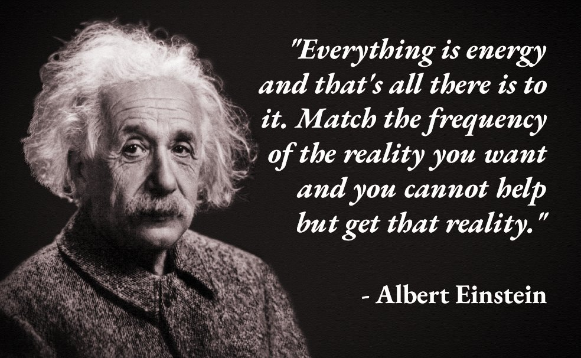

Gallery
Linda Mansour
Originally a Neuroscience major, she made a career switch to bioinformatics. She was featured in an article on break-thru tech and is loving it.
David Serrano
He is him, the author of this website. He hopes that he embodies every characteristic that this website poses. He believes that everyone is capable of what it takes to become whatever they want with the power of choice.
Frank Mensah
I met this guy in CS 211 during COVID. He's a CS homie that's been there since day 1. We have both complimented each other's journeys. I remember when he told me that he wakes up at 5 am, and that inspired me to do it too.
Nadia Taiym
After joining Break-thru Tech Chicago, she was able to join Morningstar in a sprinternship, which led to a full time summer internship. Today, she works at Morningstar full-time as well as being a student full time
Vertical Monitor
This is a vertical monitor. Every Tech Chad 10x Developer Brogrammer must have a monitor that can go vertical. Instead of viewing ~35 lines of code at a time, you are able to view ~80 lines of code.
Nate Hittensdorf
This is my roommate. He is definitely a tech chad with the amount of caffeine he consumes daily. He also spends ~40 minutes on the toilet and always gets last in gun game. He also has an internship with CME.
Konrad Zygier
This is my roommate. A comrade in computer engineering, he is also in the midst of a gambling addiction.
Ryan Lakin
50% tech chad since hes just a chad. He uses his computer to write papers. He's also good with telecommunications and got caught cheating in poker once by dealing himself pocket aces.
Nick Pintar
Brilliant tech chad who is very passionate about CS. He loves CS!
AAnthony Lahm
Met this man in MATH 215 and then we had CS 362 together, where we joined a team to make arduino racecars. He is hardworking and does not mess around.
Aiban Horan
Has toy bobblehead collection that's worth probably $5,000. Has mommy issues, likes blonde chicks, and will tell you random useless facts during marvel movies that you don't care about. If this is not 10x then idk what is.
Everything matters.
Take a look at a rose. Here is one
Beautiful, isn't it?
Well guess what?
We can model the rose's spiral with <10 lines of code.
If such a beautiful rose can be created with such a simple formula, imagine what beautiful things you could do with your life if you started applying the simple things.
When I realized this, I began to live!
That made me read this book called "The 5 AM Club"

and I embodied the morning routine.
Starting in March of 2022, I made an oath to myself to wake up at 5 am every weekday for the rest of my life. Non negotiable, it has totally revolutionized my life and the direction of it. All of the neurons in my brain look at reality in a positive lense. I feel the most alive; the most aligned with the energy of the Earth's heartbeat. Nothing matters more to me than becoming the best version of myself in ALL AREAS OF LIFE. Physical, emotional/social, mental, spiritual, financial, environmental, etc. My goal on this Earth is to be maximally synergistic. To contribute so much value to this Earth that it creates a self reinforcing cycle of recycling and regrowth, just like a plant. My influence on the people around me will be multi generational.
I don't know how I will achieve that, and I don't know my true calling yet, but I know it will happen.
I want it. I am matching the frequency. I am manifesting it. I will blossom.